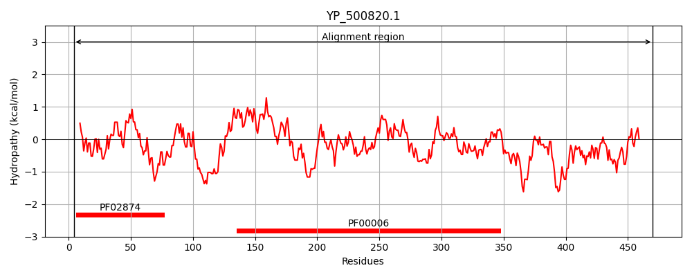
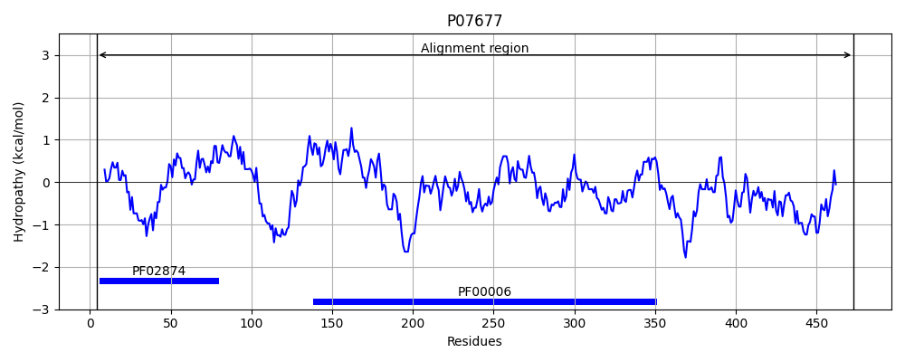
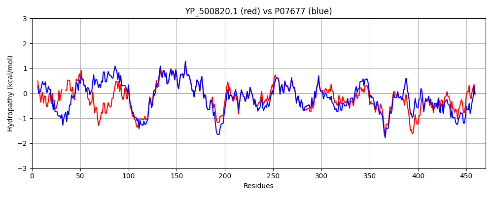

Hit Accession: P07677
Hit TCID: 3.A.2.1.14
Hit Description: gnl|BL_ORD_ID|8428 gnl|TC-DB|P07677|3.A.2.1.14 ATP synthase subunit beta OS=Bacillus sp. (strain PS3) OX=2334 GN=atpD PE=1 SV=1
Mach Len: 470
e:0.000000
Query TMS Count : 0
Hit TMS Count: 0
TMS-Overlap Score: 0.000000
Predicted Substrates:CHEBI:5584;hydron
BLAST Alignment:
Score: 1929 , Bit scores: 747 bits, E-value: 0.0e+00, Alignment length: 470, Percentage identity: 81
Query: 4 GRVTQVMGPVIDVRFEHNEVPKINNALVIDVP---KEEGTIQLTLEVALQLGDDVVRTIAMDSTDGVQRGMDVKDTGKEISVPVGDETLGRVFNVLGETIDLKEEISDSVRRDPIHRQAPAFDELSTEVQILETGIKVVDLLAPYIKGGKIGLFGGAGVGKTVLIQELINNIAQEHGGISVFAGVGERTREGNDLYFEMSDSGVIKKTAMVFGQMNEPPGARMRVALSGLTMAEYFRDEQGQDVLLFIDNIFRFTQAGSEVSALLGRMPSAVGYQPTLATEMGQLQERITSTTKGSVTSIQAVFVPADDYTDPAPATAFAHLDATTNLERKLTEMGIYPAVDPLASTSRALEPSIVGQEHYEVARDVQSTLQKYRELQDIIAILGMDELSDEDKQTVERARRIQFFLSQNFHVAEQFTGQKGSYVPVKTTVANFKDILDGKYDHIPEDAFRLVGSMDDVIAKAKDMGVEV 470
GRV QVMGPV+DV+FE+ +P I NAL I + E I LTLEVAL LGDD VRTIAM STDG+ RGM+V DTG ISVPVG TLGRVFNVLGE IDL+ +I RRDPIHR AP F+EL+TEV+ILETGIKVVDLLAPYIKGGKIGLFGGAGVGKTVLIQELI+NIAQEHGGISVFAGVGERTREGNDLY EM DSGVI KTAMVFGQMNEPPGARMRVAL+GLTMAEYFRDEQGQD LLFIDNIFRFTQAGSEVSALLGRMPSA+GYQPTLATEMGQLQERITST KGS+TSIQA++VPADDYTDPAPAT F+HLDATTNLERKL EMGIYPAVDPL STSRAL P IVG+EHY+VAR VQ TL++Y+ELQDIIAILGMDELSDEDK V RARRIQFFLSQNFHVAEQFTGQ GSYVPVK TV FK+IL+GKYDH+PED FRLVG +++V+ KAK MGVEV
Sbjct: 4 GRVIQVMGPVVDVKFENGHLPAIYNALKIQHKARNENEVDIDLTLEVALHLGDDTVRTIAMASTDGLIRGMEVIDTGAPISVPVGQVTLGRVFNVLGEPIDLEGDIPADARRDPIHRPAPKFEELATEVEILETGIKVVDLLAPYIKGGKIGLFGGAGVGKTVLIQELIHNIAQEHGGISVFAGVGERTREGNDLYHEMKDSGVISKTAMVFGQMNEPPGARMRVALTGLTMAEYFRDEQGQDGLLFIDNIFRFTQAGSEVSALLGRMPSAIGYQPTLATEMGQLQERITSTAKGSITSIQAIYVPADDYTDPAPATTFSHLDATTNLERKLAEMGIYPAVDPLVSTSRALAPEIVGEEHYQVARKVQQTLERYKELQDIIAILGMDELSDEDKLVVHRARRIQFFLSQNFHVAEQFTGQPGSYVPVKETVRGFKEILEGKYDHLPEDRFRLVGRIEEVVEKAKAMGVEV 473 | Protein Hydropathy Plots: |
|---|
|  |  |
Pairwise Alignment-Hydropathy Plot:
|
|---|
|  |